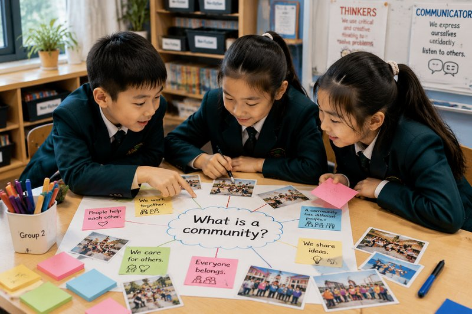
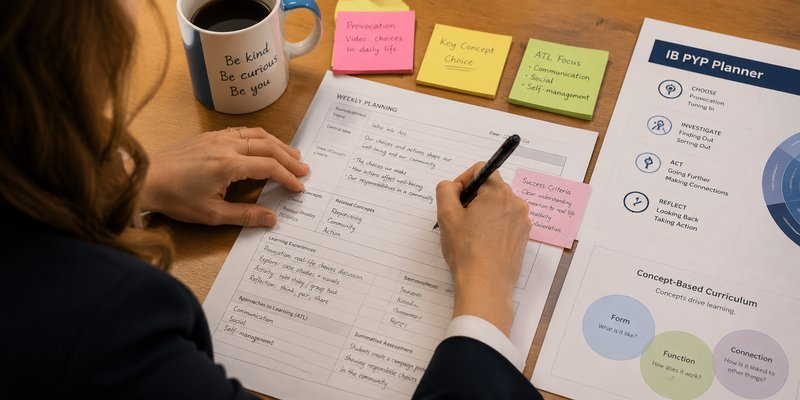
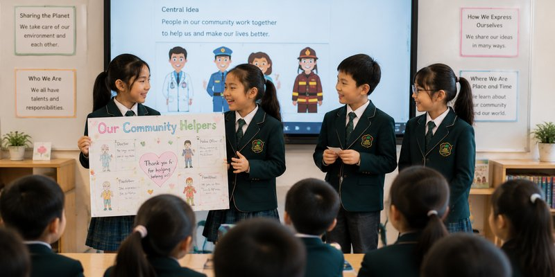
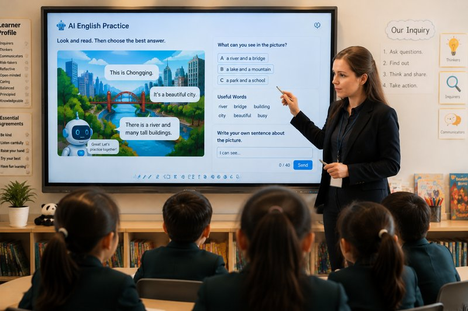
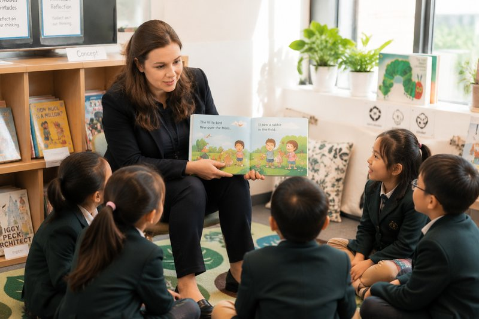

Welcome to my portfolio
IB PYP Educator · Language Acquisition Specialist · Curriculum Designer
15+ Years in Chongqing · Trilingual · Chinese Permanent Resident
I arrived in Chongqing in 2011 as an overseas student learning Chinese — I never imagined I'd still be here more than a decade later, teaching English to young learners. Discovering the IB approach felt like opening a door to a world I'd been looking for without knowing it. Today I see English not just as a subject, but as a bridge to the world — for my students, and for myself.
At a Glance
Featured Highlights

Designing meaningful inquiry that builds conceptual understanding and develops lifelong learners across Grades 1–8.
Explore →
Creating IB-aligned units of inquiry, lesson sequences, and assessments for PYP and MYP across primary and middle school.
Explore →
Directing two annual student-led performances and showcases that celebrate language growth and international mindedness.
Explore →
Exploring how AI tools can support language teaching and differentiated learning — and what a teacher is still for.
Explore →
Supporting multilingual learners to build English skills across Grades 1–8, with a trilingual perspective on what language learning actually feels like.
Explore →Photo note: Classroom and student images on this site are AI-generated illustrations. Real student photos are not published in order to protect student privacy — an ethical commitment central to my teaching practice.
Recent Work
An interdisciplinary unit integrating language acquisition, real-world research, and cross-cultural communication.
View project →Exploring identity, culture, and memory through storytelling across transdisciplinary themes.
View project →Achievement-band comment banks for Grades 2–8, bridging IB standards and Chinese national curriculum requirements.
View project →